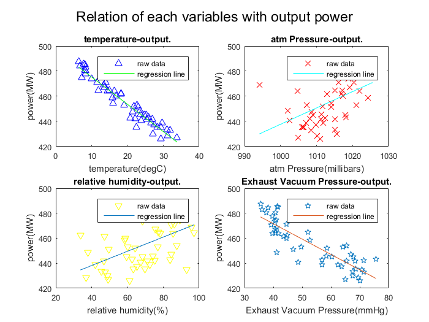

Contents
%%%%%%%%%%%%%%%%%%%%%%%%%%%%%%%%%%%%%%%%%%%%%%%%%%%%%%%%%%%%%%%%%%%%% % ENGR 132 % Program Description % perform linear regression to determine how each of the four conditions affects the plant’s net electrical power output % % Assigment Information % Assignment: PS 04, Problem 3 % Author: Yuefan Fu,fu194@purdue.edu % Team ID: 001-05 % Contributor: Name, login@purdue [repeat for each] %%%%%%%%%%%%%%%%%%%%%%%%%%%%%%%%%%%%%%%%%%%%%%%%%%%%%%%%%%%%%%%%%%%%%
__________________
INITIALIZATION
%import all data from csv file for future use allData=importdata('Data_CCPP_measurements.csv'); temperatureRaw=allData.data(:,1); atmPressureRaw=allData.data(:,2); humidityRaw=allData.data(:,3); vacPressureRaw=allData.data(:,4); powerRaw=allData.data(:,5);
__________________
CALCULATIONS
%calculate regression line for each model temperatureFit=polyfit(temperatureRaw,powerRaw,1); atmPressureFit=polyfit(atmPressureRaw,powerRaw,1); humidityFit=polyfit(humidityRaw,powerRaw,1); vacPressureFit=polyfit(vacPressureRaw,powerRaw,1); %calculate R^2 %temperature tempSST=sum((powerRaw-mean(powerRaw)).^2); tempSSE=sum((powerRaw-temperatureFit(1)*temperatureRaw-temperatureFit(2)).^2); r2Temp=1-tempSSE/tempSST; %atm Pressure atmSST=sum((powerRaw-mean(powerRaw)).^2); atmSSE=sum((powerRaw-atmPressureFit(1)*atmPressureRaw-atmPressureFit(2)).^2); r2Atm=1-atmSSE/atmSST; %humidity humSST=sum((powerRaw-mean(powerRaw)).^2); humSSE=sum((powerRaw-humidityFit(1)*humidityRaw-humidityFit(2)).^2); r2hum=1-humSSE/humSST; %vacPressure vacSST=sum((powerRaw-mean(powerRaw)).^2); vacSSE=sum((powerRaw-vacPressureFit(1)*vacPressureRaw-vacPressureFit(2)).^2); r2vac=1-vacSSE/vacSST;
__________________
FIGURE DISPLAY
%temperature plot subplot(2,2,1); plot(temperatureRaw,powerRaw,'b^'); hold on; plot(temperatureRaw,temperatureRaw*temperatureFit(1)+temperatureFit(2),'g'); title('temperature-output.'); xlabel('temperature(degC)'); ylabel('power(MW)'); legend('raw data','regression line'); set(gca,'FontSize',8); %atm pressure plot subplot(2,2,2); plot(atmPressureRaw,powerRaw,'rx'); hold on; plot(atmPressureRaw,atmPressureRaw*atmPressureFit(1)+atmPressureFit(2),'c'); title('atm Pressure-output.'); xlabel('atm Pressure(millibars)'); ylabel('power(MW)'); legend('raw data','regression line'); set(gca,'FontSize',8); %Relative Humidty plot subplot(2,2,3); plot(humidityRaw,powerRaw,'yv'); hold on; plot(humidityRaw,humidityRaw*humidityFit(1)+humidityFit(2)); title('relative humidity-output.'); xlabel('relative humidity(%)'); ylabel('power(MW)'); legend('raw data','regression line'); set(gca,'FontSize',8); %Exhaust Vacuum Pressure plot subplot(2,2,4); plot(vacPressureRaw,powerRaw,'p'); hold on; plot(vacPressureRaw,vacPressureRaw*vacPressureFit(1)+vacPressureFit(2)); title('Exhaust Vacuum Pressure-output.'); xlabel('Exhaust Vacuum Pressure(mmHg)'); ylabel('power(MW)'); legend('raw data','regression line'); set(gca,'FontSize',8); suptitle('Relation of each variables with output power')
__________________
TEXT DISPLAY
fprintf('The equation for temperature with output is power = %.2f temperature + %.2f.\n',temperatureFit); fprintf('The equation for Atmospheric Pressure with output is power = %.2f pressure %.2f.\n',atmPressureFit); fprintf('The equation for Relative Humidty with output is power = %.2f humidity + %.2f.\n',humidityFit); fprintf('The equation for Exhaust Vacuum Pressure with output is power = %.2f vacPressure + %.2f.\n',vacPressureFit); fprintf('\ncoefficient of determination of temperature with output is %.4f\n',r2Temp); fprintf('coefficient of determination of Atmospheric Pressur with output is %.4f\n',r2Atm); fprintf('coefficient of determination of Relative Humidty with output is %.4f\n',r2hum); fprintf('coefficient of determination of Exhaust Vacuum Pressure with output is %.4f\n',r2vac);
The equation for temperature with output is power = -2.17 temperature + 497.03. The equation for Atmospheric Pressure with output is power = 1.30 pressure -862.18. The equation for Relative Humidty with output is power = 0.57 humidity + 415.41. The equation for Exhaust Vacuum Pressure with output is power = -1.23 vacPressure + 520.80. coefficient of determination of temperature with output is 0.9364 coefficient of determination of Atmospheric Pressur with output is 0.2170 coefficient of determination of Relative Humidty with output is 0.2831 coefficient of determination of Exhaust Vacuum Pressure with output is 0.7577
__________________
ANALYSIS
% -- Q1 % The larger R^2 value is, the better a linear model explain a existing % data set % -- Q2 % the model of Ambient temperature with output power is the best model to % explain the data beacuse it has the highest R^2 value.
__________________
ACADEMIC INTEGRITY STATEMENT
I/We have not used source code obtained from any other unauthorized source, either modified or unmodified. Neither have I/we provided access to my/our code to another. The project I/we am/are submitting is my/our own original work.